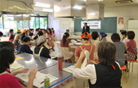
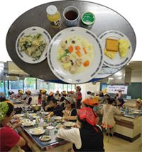

- 【日 時】
- 9月29日(木)10:30～14:00
- 【場 所】
- 与野本町コミュニティセンター調理室
- 【出席者】
- 38人(会長､さいたまコープ､医療生協さいたま､さいたま高齢協､さいたま住宅生協､パルシステム埼玉､勤労者生協､さいたまコープちえネット､事務局)
＜会長あいさつ＞
｢埼玉県米消費拡大推進事業｣について説明後、米粉の普及状況の学習と調理実習をして米粉を身近に使いより広げていきましょう。また、震災を経て、不安もありますが、新米の検査状況等お聞きし意見交流をしていきます。
1．ミニ学習要旨 講師：関東農政局より
|  |
（1）新米について
- 消費者の手元に届くものは安全性が確保されています。（3段階の調査）
- 平成23年4月に作付制限を行いました。土壌の調査をし、玄米への放射性セシウムの移行が心配のない水田にのみ作付けをしました。
- 土壌調査の結果を踏まえて、収穫前調査(予備調査)と収穫後調査を行っています。
（2）米粉について
- 利点～米を米粉にする技術が大変向上し、小麦粉と変わらないくらいの微細粉にする事ができ、利用しやすくなりました。ダマになりにくい、アミノ酸バランスが小麦より優れています、低吸油(米粉21％、小麦粉38％)、食料自給率アップにつながります。
- 米粉パンの普では、学校給食で導入が進み、埼玉県はほぼ全校導入されました。
（3）質疑応答を行ないました。
|  |
2．米粉の調理実習と試食
（調理講師：さいたまコープちえネット｢米っ粉チーム｣）
チヂミ、クリームシチュー、カスタードクリームの3品を調理・試食しました。
3．交流
｢米粉｣｢今日のミニ学習｣｢協議会で今後行う公開学習会｣｢放射射能汚染問題について｣等、意見交換しました。